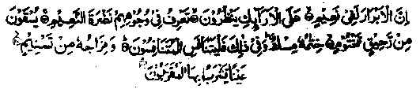
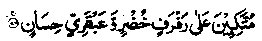
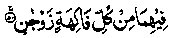
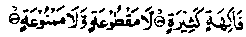
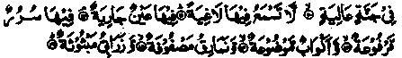
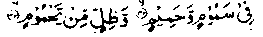
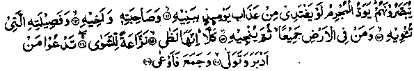
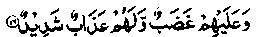
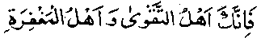

Chapter Seven
53. The reformation of Musa bin Muhammad bin Sulaiman al-Hashmi through the recitation of Quranic Ayaat by a ragged young man
Muhammad bin Sammaak Rahmatullah alaihe relates: "Musaa Bin Muhammad Bin Sulaiman Alhashimi was a nobleman of the Banu Umayyah clan who had been brought up in affluent circumstances, engaging himself in eating, drinking and merrymaking, having most elegant clothes to wear and indulging in all kinds of lusts and sensual pleasures. Himself a handsome young man with a moon-like face, he lived in a palace enjoying the company of beautiful women and men, far away from the worries and cares of the world. Allah Ta'ala had showered upon him all kinds of bounties and favours; his annual income amounted to three hundred three thousand (303,000) Dinaars which he spent on pastimes and lustful pursuits. He lived in a lofty mansion, with windows on one side, opening out to the main road; he would sit beside one of these and watch the wayfarers walking outside. There were windows, on the other side of the building, that opened out to a beautiful garden from which cool and fresh breezes blew, laden with sweet fragrance of flowers. In the middle of his palace, there stood a domed pavilion of ivory, studded with nails of silver and burnished with gold. The young Hashmi sat in this pleasure-dome, with a gem-studded turban tied round his head, reclining on a throne covered with jewelled brocade, in company with his close friends and companions, while his attendants stood at a respectable distance, awaiting his orders. In front of the pavilion sat a company of dancers and singing girls; whenever he wanted tp listen to music, he just glanced at the guitar, the singer came forward and began to sing songs and play the instruments. When-he Wanted the music to stop, he pointed to the instruments and the music stopped. These merriments went on till late at night until deep overpowered him. When he was intoxicated with excessive drinking, his friends went away and he retired to his private apartment, with any girl that pleased his fancy. He spent his r evenings playing chess- and dice. Nobody ever talked to him of matters painful or concerning death or diseases. His parties were devoted to merrymaking. amusing anecdotes were related and jokes and pleasantries went round. Each day, people brought to him rich varieties of rarest perfumes from all over the country and nice vases of sweet-smelling flowers were presented to him.
The chieftain spent twenty seven years of his life in such luxuries and pastimes. One night, when sitting as usual, in his pavilion, he heard a sweet voice coming from a distant place; unlike the voice of his own singers, but most melodious and charming, which made him restless. He ordered the music to stop and leant out of the window to listen attentively to the voice. The voice floated on the air for some time, then silence fell and then it became audible again. The chieftain ordered his servants to fetch the man responsible for these charming tones. While their master continued to drink wine, the servants tracked the voice to a thin and lean young man, weak in body, pale in face, with parched lips and dishevelled hair, his belly drawn close to his back, dressed in two rags that just covered his nakedness, standing in Salaat before Allah Ta'ala and reciting from the Holy Qur’an. They caught hold of the man, without even telling him why, took him out of the Masjid into the palace and presented him to their master, saying, "Here is the person you wanted, sir”. The chieftain, who was now dead-drunk and not in his proper senses, asked, "Who is this man?" and they told him that he was the one whose voice he had heard a few moments ago. He asked them where they had found the man and they said that he was offering Salaat in a Masjid and reciting from the Holy Qur’an. The chieftain then asked the ragged young man what he was reciting and he began to recite, beginning with:

I seek refuge in Allah, against Shaitan, the outcast. Lo! The righteous verily are in delight (of Jannah); On couches, gazing (at the wonders of Jannah). Thou wilt know in their faces the radiance of delight. They will be given to drink a pure wine, seeded, whose seal is musk. For this, let (all) those strive who vie with one another to achieve the bliss (of Jannah). (As this bliss can only be achieved as a recompense for good deeds, let them try to excel one another in the performance of good deeds). And, (that wine) is mixed with the water of ‘Tasneem,’ a spring whence those, brought near to Allah, drink.
(the drink served to the righteous will be seasoned with the water of Tasneem, which is a speciality, meant only for those brought near to Allah (Maqarraboon), who will have it in its pure undiluted form). (Tatfeef: 22 - .28)
The ragged man then said to the chieftain, "O you who have been deceived.! Your palace, your pavilion and your couches cannot compare with those:
Raised couches (of Jannah); (al-Waaqi’ah: 34). Couches lined with silk brocade- (ar-Rahman: 54)

Green cushions and carpet of the fairest pattern. (ar-Rahman:
(While reclining on these couches, the Jannati will see ) ‘Two gardens wherein are two fountains flowing. (ar-Rahman:46 - 50)

Wherein (in these two gardens) is every kind of fruit in pairs (each kind of fruit having two different tastes).(ar-Rahman: 52)

(The fruit of these gardens)‘is neither exhausted nor forbidden’ (al-Waaqi'ah: 33). (Unlike the gardens of this world, of which not everybody is allowed to eat)!
The man went on to recite Verses from the Holy Qur’an comparing Jannah and the circumstances of its inhabitants, with those describing Jahannam and the circumstances of the Jahannamis, thus:
Then he will be in a blissful state, in a high Garden (Jannah)’. (al-Haaqqah: 21-22).

In lofty Gardens (Jannah) where they hear no idle speech, wherein is a gushing spring, wherein are couches raised, and goblets set at hand, and cushions arranged, and silken carpets spread (on all sides, all seats being alike, without discrimination). (al-Ghashiyah 10 - 16) Lo! The righteous will be amid shade and fountains, (al-Mursalaat: 41)
It’s food (the food of Jannah) is everlasting, (is not exhausted), and it's shade; (also) this is the reward of those who are righteous, while the reward (the final fate) of the Kaafirs (Non-Believers) is Jahannam. (ar-Ra’d: 35)
Lo! The guilty are perpetually in the torment of Jahannam, it will not be relaxed for them, and they will live therein given to despair), (az-Zukhruf: 74-75)
Lo! The guilty are in error and madness (sheer folly) (They will be disillusioned) on the Day when they are dragged into the Fire, upon their-faces (and it is said, unto them): Feel the touch of Hell (Jahannam). (al-Qamar: 47 -48)

(The Jahannamis will be ) in scorching wind, scalding water and shadow of black smoke (al-Waaqi'ah: 42- 43)

The guilty man will long to ransom himself from the Punishment of that Day at the price of his children, and his spouse and his brother and his kin that harboured him; and all that are in the earth, if then it might deliver him. But nay (it never can be)-For lo! It is the Fire of Jahannam, plucking out his being) eager to roast him; It calls him who turned and fled (from truth in the life of the world) and hoarded wealth (unlawfully) and withheld it (put it away), (al-Ma'aary: 11-18).

And wrath (of Allah) is upon them and theirs will be a severe punishment. (as-Shuraa: 16).
They will wish to come forth from the Fire, but they will not come forth. (al-Maaidah: 37)
When the man had thus recited a good many Verses, about Jannah and Jahannam, the Hashmi chief rose from his seat and embraced him, weeping and crying most bitterly. He told his friends to go away and, himself went out, with the poor man, to the courtyard of his palace, where he sat on a rug and wept and cried with deep remorse over his past youth, while the Faqeer sat there till dawn admonishing him to repent and exhorting him to start a life of piety. The Hashmi then repented deeply of his sins, before the poor man, and made a covenant with Allah Ta'ala that he would sin no more. In the morning, he made public repentance, in the presence of his friends and other people, and sat in a corner of the Masjid, leading a life of devotions and holy seclusion. He gave away, as Sadaqah, all the assets of his house, distributed all his belongings among the poor, dismissed all his servants, set free most of his slave-boys and slave-girls, sold others and spent the money received, in return, for the cause of Allah Ta'ala. He made full requital of all the wrongs done to others and paid all that was due from him to the people, returned all things, he had taken wrongly and forcibly, to their owners. Then, he entered upon a life of austerity, wearing coarse cloth and eating plain barley bread. He stood all night in Nafl Salaat and fasted by day and began to lead a life of self-mortifying austerities. So much so, that the saints and spiritual Sheikhs of his times came to visit him and advised him not to chastise himself so severely, saying,. "Take pity on yourself; Allah Ta'ala is Most Merciful and His Bounty is beyond our estimation. He grants bounteous rewards for little pains." ‘But he would reply, "My friends, you do not know how much I sinned against my Lord, day and night. I defied His commandments. I indulged in most heinous crimes’and he would then weep profusely.
The chieftain then undertook a journey for Hajj, travelling all the way on foot, dressed in coarse cloth, with a cup and a small bag of provisions. He reached Makkah, performed Hajj, and stayed there afterwards, till his death. May Allah grant him His bounteous blessings! During his stay in Makkah Mukarramah, the chieftain used to go to Hateem by night and spend the whole night whimpering, weeping and crying unto Allah. He would say in the course of his invocation, "O Allah! Many an hour of night have I spent in utter heedlessness, never for a moment remembering Thee! I defied Thee, my Lord, by disobeying Thee and by transgressing Thy commandments! My Allah, all my virtues have been lost! The opportunity to do good has been wasted away! I am left with a burden of sins laid on my back! Ah! Woe is me! What shall I do on the Day when I shall he made to stand before Thee (for Reckoning, after death). Ah! Most Woeful for me, will be the Day, when my Book of deeds shall be unrolled! What a shame for me to find my scroll replete with sins! O Allah! I feel Thy wrath descending upon me now! O Allah, Thy Wrath is my damnation. O Allah, Thou showered Thy blessings and bounties upon me, but I turned away from Thee, like a most ungrateful slave, defying commandments, thus incurring Thy Wrath! O Allah, Thou was ever watching over me (while I sinned most shamefacedly) and forbearing to punish me! O Allah, where else can I find shelter, except in Thee! O whither can I flee! Thou Alone are my Resort, Thee Alone I beseech in my misery! Whom should I implore but Thee? Whose clemency shall I trust but Thine! O Allah, O Most Merciful Lord, I feel ashamed to ask Thee for Jannah; I implore Thee, My Lord, invoking Thy Infinite Mercy, Thy all-embracing Magnanimity, Thy Vast Bounty, to have mercy on me and grant forgiveness to me!

For, Thou alone are the Lord of Righteousness, and the Lord of Forgiveness".